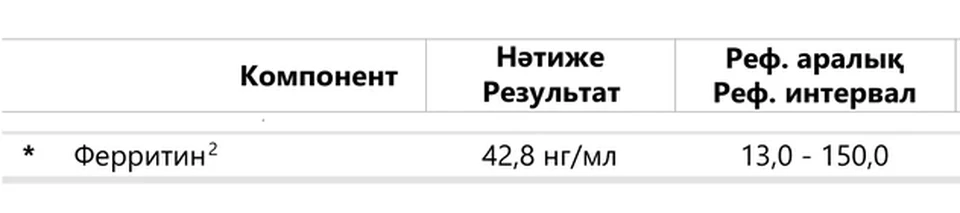
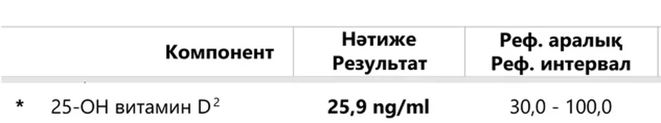
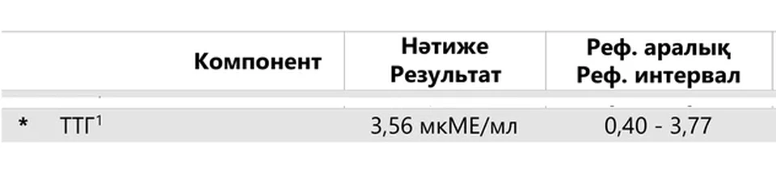
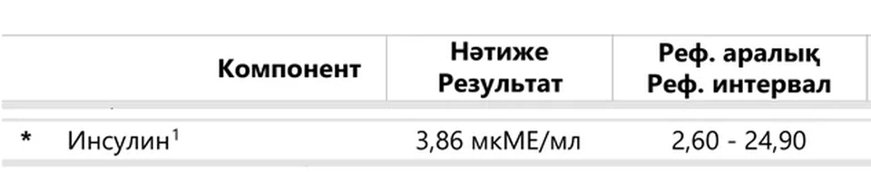
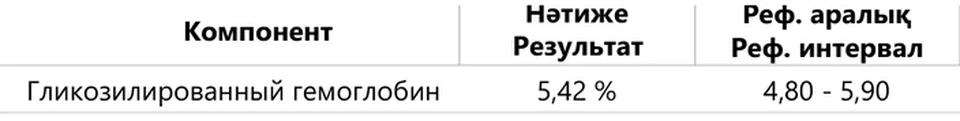
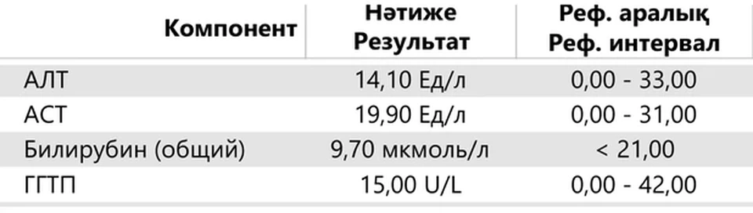
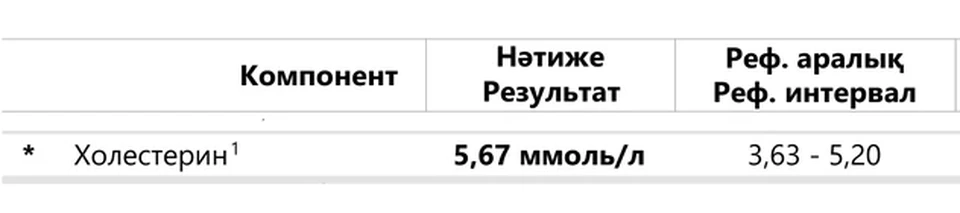

Метаболическая грамотность
14 дней, чтобы понять причины усталости, веса, проблем с волосами и ЖКТ и уйти с личным планом
Выбрать тарифПосмотреть программу
Перестаньте разбираться в здоровье наугад
Советы в соцсетях не связаны между собой: сегодня про железо, завтра про сон. Программа собирает всё в одну систему: как устроен организм, откуда ваш симптом, какие анализы это покажут и что делать.
С субтитрами, можно смотреть без звука
Кому подойдёт программа

Просыпаетесь уже разбитыми, энергии хватает на полдня

Вздутие, тяжесть после еды, непонятные реакции на продукты

Вес не уходит даже на диетах, тянет на сладкое

Выпадают волосы, ломаются ногти, кожа сухая или жирная

Пьёте витамины и БАДы, а лучше не становится
Дело часто не в силе воли. У этих состояний есть причины, которые можно проверить.
Выбрать тарифУзнаёте себя?
Люди описывают самочувствие своими словами. Фамилии сокращены.
Сильная усталость с утра (и весь день), в последнее время частая зевота (не получается норм вдохнуть), сердце сильно бьется при тренировках до 175 bpm (бег, на велосипеде, и пр. Кардио)
Если кратко, то отсутствие энергии. Ничего не хочется, ни спорта, ни прогулок, утром уже разбитая. Хотя ложусь в 22:00. За день очень сильно устаю. Нет радости
Мало энергии, слабый иммунитет, набор веса, живот, седеющие волосы
С прошлого года седины больше стало на голове, и волосы больше выпадают. У быстрая усталость. В декабре 2025 я сдавала на ферритин и D, оказалось ниже нормы. Пять капельниц венофера (раз в неделю) приняла, БАДы пропила. По рекомендаций сестры, она изучала эту тему самостоятельно. Я хочу все таки у специалиста узнать как что правильно делать, так как сейчас опять быстро устаю, и проблемы с волосами не решились.
Если я съем что-то не то, у меня бывает изжога, и я не могу спать. В последнее время сильное вздутие живота. Постоянно пью «Боржоми». Слабость, наверное, ещё из-за работы: работаю по 10–11 часов в день и не высыпаюсь. Перестал делать силовые упражнения. Раньше всегда бегал и подтягивался на турнике не меньше 20 раз за один подход, сейчас и 10 уже тяжело.
Усталость, нет энергии, туман в голове, частые головные боли, апатия
Основные текущие жалобы:
1) постоянная сонливость;
2) низкий уровень энергии и быстрая утомляемость;
3) ощущение «неясной» головы и отсутствия концентрации уже с начала дня;
4) выпадение и ломкость волос;
5) избыточный вес, хотелось бы снизить его грамотно и без вреда для здоровья.
Вечно вялое состояние, отсутствие энергии, уставший вид, постоянно хочется спать, но со сном все в порядке, выпадают волосы, ломкие ногти, бледная кожа, ничего не хочу, с 23 года периодически сдаю анализы на железо, и пропиваю курсами, сначала приходит в норму, потом снова падает
В последнее время быстро устаю, чувствую нехватку энергии, также заметила умеренное выпадение волос. Хотела бы разобраться в возможных причинах и исключить дефициты, гормональные нарушения и аутоиммунные заболевания.
Лишний вес и недосып
Упали физические показатели. Быстро устаю на спорте, тахикардия даже при подьеме по лестнице. Энергии меньше чем раньше. Часто кружится голова про смене положения. Запоры. Сильное выпадение волос.
усталость в течении дня, разбитая утром после длительного\коротокго сна, туман в голове, апатия, скачки энергии, диарея при несоблюдении Low-FODMAP диеты, слабость при длительной диарее, раздраженность, ангина при охлаждении, тревожный сон
Хочу восполнить все дифициты грамотно без перегруза
Самочувствие нормальное , но есть лишний вес и с понедельника буду на новой работе работать по ночам по 13-14 часов и хотел все дефициты проверить и нормализовать здоровье чтобы ночная работа не усугубила ситуацию
Отсутствие сил и энергии несмотря на полноценный сон, тяжесть в теле, апатия, выпадение волос длительное время, отечность, метеоризм, последние полгода аллергический ринит- причина не установлена, частые орви последний год
Уже больше 5 лет не могу поднять уровень ферритина
Система, а не набор советов
10 лекций по порядку: как устроен организм → откуда симптом → какие анализы это покажут → что делать. К ним материалы, которые остаются с вами.


Учимся читать свои анализы
Реальные бланки, личные данные скрыты. Точка показывает, где значение относительно референса лаборатории.
Ферритин 42,8 нг/мл
В норме по бланку. Разберём, почему при таком ферритине всё равно бывает усталость.

25-ОН витамин D 25,9 нг/мл
Ниже референса. Разберём, как восполнять и когда пересдавать.

ТТГ 3,56 мкМЕ/мл
В норме, но у верхней границы. Разберём, что смотреть вместе с ТТГ.

Инсулин 3,86 мкМЕ/мл
Разберём, как читать инсулин вместе с глюкозой.

Гликированный гемоглобин 5,42 %
В норме по бланку. Разберём, чем он отличается от глюкозы натощак.

АЛТ 14,10 Ед/л
Все показатели в референсе. Разберём, на что смотреть в печёночном профиле.

Холестерин 5,67 ммоль/л
Выше референса. Разберём, почему одного общего холестерина мало.

Как проходит программа
Оплачиваете и получаете всё сразу
В тот же день открываются все 10 лекций, бонусные уроки, гайд и трекер.
Смотрите в своём темпе
Лекции по 50 минут. Можно по одной в день или за выходные.
Применяете к себе
Ведёте трекер самонаблюдения и сверяете свои анализы по гайду.
Задаёте вопросы Шынгысу
8 декабря групповой Zoom-созвон в тарифе «С Zoom-созвоном». Организационные вопросы - в общем чате потока.
Поток идёт с 25 ноября по 8 декабря. Все лекции остаются в записи.
Выбрать тарифПрограмма
Блок 1. Основа
2 лекции · гайд «Как читать свои анализы» и трекер
Блок 1. Основа
- 01Как устроен ваш организм
- 02ЖКТ: как еда становится энергией
Блок 2. Энергия и вес
4 лекции · урок «Как подбирать витамины и БАДы»
Блок 2. Энергия и вес
- 03Энергия и хроническая усталость
- 04Гормоны и вес
- 05Дефициты: ферритин, B12, D3
- 06Иммунитет
Блок 3. Волосы и сон
2 лекции · урок «Перименопауза для женщин 40+»
Блок 3. Волосы и сон
- 07Волосы, кожа, ногти
- 08Сон и восстановление
Блок 4. Ваш план
2 лекции · конспекты всех лекций
Блок 4. Ваш план
- 09Долголетие
- 10Ваша персональная карта восстановления
Витамины и БАДы Бонус
как подбирать и не навредить себе
Витамины и БАДы Бонус
- +Видеоурок открывается сразу после оплаты
Перименопауза Бонус
урок для женщин 40+
Перименопауза Бонус
- +Видеоурок открывается сразу после оплаты
Отрывок лекции «Сон и восстановление»: после короткой ночи человек в среднем съедает на 385 ккал больше.
Выберите формат
В обоих тарифах все 10 лекций, бонусы, гайд, трекер и общий чат потока.
Первые пять участников, которые оплатят программу, получат личный разбор своих анализов от Шынгыса.
С Zoom-созвоном
Для тех, кто хочет задать свои вопросы и пользоваться материалами весь год.
Включено:
- 10 лекций и 2 бонусных урока
- Гайд по анализам, трекер, конспекты
- Общий чат потока в WhatsApp
- Zoom-созвон с Шынгысом 8 декабря: ответы на ваши вопросы
- Доступ на год и живые лекции в течение года
Занято 0 из 30 · осталось 30
Сумма для Kaspi и другие способы
Самостоятельный
Все материалы на 3 месяца, если вопросы задавать не нужно.
Включено:
- 10 лекций и 2 бонусных урока
- Гайд по анализам, трекер, конспекты
- Общий чат потока в WhatsApp
- Доступ на 3 месяца, без Zoom-созвона
Сумма для Kaspi и другие способы
Гарантия на первые 2 дня
Смотрите лекции первые 2 дня. Если поймёте, что программа не для вас, напишите менеджеру в течение 2 дней после оплаты, и мы вернём деньги полностью.
Оплачивая программу, вы принимаете условия публичной оферты.
Кто ведёт программу

Шынгыс Садык
Специалист в метаболическом здоровье
Что говорят выпускники
Видео с выпускного Школы метаболического здоровья, 18 ноября. Нажмите на кружок, чтобы включить звук.
«Пришёл с тем, что усталость была жёсткая прямо. Наконец сдал анализы, которые никогда не мог сдать, - общая картина уже правильная сложилась.»
Что было до Школы
Постоянная усталость. Трудно с утра вставать, и усталость во второй половине дня.
«Пришла с низким ферритином и витамином D. Многие мифы вы развеиваете. Есть ориентиры - и уже от этого легче, спокойнее.»
Что было до Школы
Несколько лет низкий ферритин и витамин D. Усталость, низкий уровень энергии и иногда головокружения. Это меня забеспокоило по-настоящему, и я начала заниматься своим здоровьем. Хотелось бы делать это грамотно.
«Я была вообще потерянная насчёт состояния. Всё, что мы находим в интернете, - такой хаос. Состояние намного улучшилось.»
Что было до Школы
Постоянная усталость, даже после сна, нет сил для тренировок, и очень сильно выпадают волосы. Да и сон прерывистый. Есть отёки утром. Постоянно пью железо, но состояние не улучшается.
Частые вопросы
Когда я получу доступ?
В день оплаты - сразу все 10 лекций, 2 бонусных урока, гайд по анализам, трекер и конспекты. Смотрите в своём темпе. Общий чат потока работает с 25 ноября по 8 декабря.
Кто отвечает в чате потока?
Ассистент программы: помогает с доступом, материалами и организацией. Вопросы по содержанию лекций вы зададите Шынгысу на созвоне 8 декабря (тариф «С Zoom-созвоном»).
Можно сначала попробовать бесплатно?
Да. Начните с бесплатных интерактивных гидов: ферритин и железо, кишечник и энергия, гормоны, сердце и сосуды. Программа даёт систему, которую в гидах не уместить.
Как оплатить в Kaspi?
Нажмите «Оплатить в Kaspi», введите сумму тарифа (14 990 ₸ или 24 990 ₸) и оплатите. Пришлите чек менеджеру в WhatsApp - в тот же день откроем доступ.
Можно ли вернуть деньги?
Да, действует гарантия на первые 2 дня. Если за это время поймёте, что программа не для вас, напишите менеджеру в течение 2 дней после оплаты. Вернём деньги полностью.
Нужны ли медицинские знания?
Нет. Первая лекция объясняет устройство организма простым языком, а каждая тема идёт от механики к практике.
Есть ли рассрочка?
Да, Kaspi 0‑0-12 для тарифа «С Zoom-созвоном»: 29 990 ₸. Оформляется через менеджера.
Я живу не в Казахстане
«Самостоятельный» - 2 990 ₽ или 35 $, «С Zoom-созвоном» - 4 590 ₽ или 59 $. Менеджер подскажет удобный способ оплаты.
Заменяет ли программа разбор моих анализов?
Нет. Программа даёт базовое понимание, как действовать в вашей ситуации. Персональный разбор анализов - отдельный формат.
Напишите менеджеру
Ответим в WhatsApp: про оплату, доступ и то, подойдёт ли программа вам.
Написать в WhatsAppПоток 25 ноября - 8 декабря
Все лекции, гайд и трекер откроются в день оплаты.
Выбрать тариф